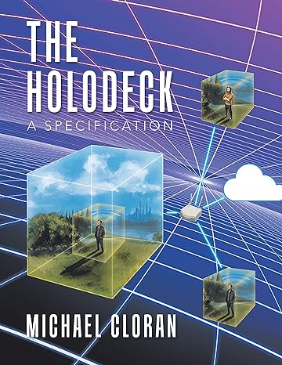

Fact Or Fiction You Decide
This book introduces the reader to several futuristic technologies as ideas in order to interest the reader and to possibly setup a scenario where the ideas can be brought from idea into a reality. For example a Holodeck with smell, touch, temperature, weight and visuals or a crude food replicator which works by forging atoms which make up molecules which form molecular strands which form food. Crude transporter technology is quickly covered and more.
The Holodeck A Specification
This book is about a requirements specification for a Holodeck at a proof of concept level. In it I introduce optical functions for a optical processor and describe how they map to a subset of the Risc-V open instruction set. I describe how parallelism could be achieved. I then describe a possible layered approach to an optical processor motherboard for the datacenter and for a personal Holodeck. I describe Volumetrics in brief and show how its evolution to Holodeck volumetrics could be done with bend light technology and the possibility of solidness to touch. I describe in detail the architecture of a Holodeck covering several approaches to Holodecks from static scene to scrolling scene to multi-user same complex to networked multi-user Holodecks.
